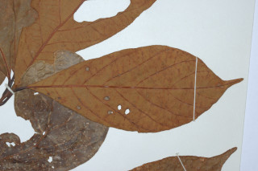
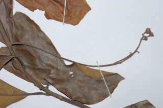
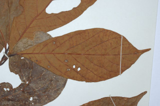
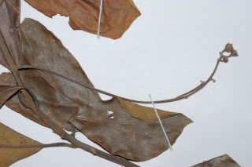

Trees up to 15 m tall.
15 ಮೀ.ವರೆವಿಗೆ ಬೆಳೆಯುವ ಮರಗಳು.
15 മീറ്റര് വരെ ഉയരമുളള മരങ്ങള്.
மரங்கள் 15 மீ. உயரம் வரை வளரக்கூடியது
Branchlets terete, lenticellate, flush grey pubescent.
ಕಿರುಕೊಂಬೆಗಳು ದುಂಡಾಗಿದ್ದು ರೋಮರಹಿತವಾಗಿರುತ್ತವೆ.
ശ്വസനരന്ധ്രങ്ങളുളളതും, കനത്തില് ചാര നിറത്തിലുളള രോമിലമായ ഉരുണ്ട ഉപശാഖകള്.
சிறிய நுனிக்கிளைகள் குறுக்குவெட்டுத் தோற்றத்தில் வளையமானது, லெண்டிசெல் கொண்டது, புதிய குறுத்து இலைகள் உரோமங்களுடையது.
Leaves simple, alternate, spiral; petiole 1-2 cm long, planoconvex in cross section, grey pubescent when young; lamina to 9-21 x 4-9 cm, generally oblanceolate, apex abruptly long acuminate, base cuneate, grey pubescent beneath at least when young; midrib slightly raised above; secondary_nerves ca. 7 pairs; tertiary_nerves distantly percurrent.
ಎಲೆಗಳು ಸರಳವಾಗಿದ್ದು ಪರ್ಯಾಯ ಮತ್ತು ಸುತ್ತು ಜೋಡನಾ ವ್ಯವಸ್ಥೆಯಲ್ಲಿರುತ್ತವೆ; ತೊಟ್ಟುಗಳು 1 - 2 ಸೆಂ.ಮೀ. ಉದ್ದ ಹೊಂದಿದ್ದು ಅಡ್ಡ ಸೀಳಿದಾಗ ಸಪಾಟ ಪೀನ ಮಧ್ಯದ ಆಕಾರದಲ್ಲಿರುತ್ತವೆ ಮತ್ತು ಎಳೆಯದಾಗಿದ್ದಾಗ ಬೂದು ಬಣ್ಣದ ಮೃದು ತುಪ್ಪಳದಿಂದ ಕೂಡಿರುತ್ತವೆ;ಪತ್ರಗಳು 9-21 X 4-9 ಸೆಂ.ಮೀ.ವರೆಗಿನ ಗಾತ್ರ ಹೊಂದಿದ್ದು ಸಾಮಾನ್ಯವಾಗಿ ಬುಗುರಿ-ಭರ್ಜಿಯ ಆಕಾರ ಹೊಂದಿರುತ್ತವೆ;ಪತ್ರಗಳು ಥಟ್ಟನೆ ಕ್ರಮೇಣ ಚೂಪಾಗುವ ಮತ್ತು ಉದ್ದ ಹೊಂದಿದ ತುದಿ ಮತ್ತು ಬೆಣೆಯಾಕಾರದ ಎಲೆಯ ಬುಡ ವನ್ನು ಹೊಂದಿರುತ್ತವೆ ;ಪತ್ರದ ತಳ ಭಾಗ ಕನಿಷ್ಟ ಪಕ್ಷ ಎಳೆಯದಾಗಿರುವಾಗಲಾದರೂ ಬೂದು ಬಣ್ಣದ ಮೃದು ತುಪ್ಪಳವನ್ನು ಹೊಂದಿರುತ್ತವೆ; ಮಧ್ಯನಾಳ ಪತ್ರದ ಮೇಲ್ಭಾಗದಲ್ಲಿ ಸ್ವಲ್ಪ ಉಬ್ಬಿರುತ್ತದೆ; ಎರಡನೇ ದರ್ಜೆಯ ನಾಳಗಳು ಅಂದಾಜು 7 ಜೋಡಿಗಳಿರುತ್ತವೆ;ಮೂರನೇ ದರ್ಜೆಯ ನಾಳಗಳು ಅಂತರ ಹೊಂದಿದ್ದು ಎಲೆ ದಿಂಡಿಗೆ ಅಡ್ಡವಾಗಿ ಕೂಡುತ್ತವೆ .
ലഘുവായ ഇലകള്, ഏകാന്തരക്രമത്തില്, സര്പ്പിളമായി അടുക്കിയതാണ്; ഛേദത്തില് ഒരുഭാഗം പരന്നും മറുഭാഗം ഉരുണ്ടുമിരിക്കുന്ന ഘടനയുളള, ഇളതായിരിക്കുമ്പോള് ചാര നിറത്തിലുളള രോമിലമായ, ഇലഞെട്ടിന് 1 സെ.മീ മുതല് 2 സെ.മീ വരെ നീളം; പത്രഫലകത്തിന് 9 സെ.മീ മുതല് 21 സെ.മീ വരെ നീളവും 4 സെ.മീ മുതല് 9 സെ.മീ വരെ വീതിയും, സാധാരണയായി, അപകുന്താകൃതിയുമാണ്, പത്രാഗ്രം പെട്ടന്നവസാനിക്കുന്ന നീളമേറിയ ദീര്ഘാഗ്രമാണ്, പത്രാധാരം ആപ്പാകാരത്തിലാണ്, കീഴെ, ഇളതായിരിക്കുമ്പോഴെങ്കിലും, ചാര നിറത്തിലുളള രോമിലമാണ്; മുഖ്യസിര ചെറുതായി മുകളില് ഉയര്ന്നതാണ്; ഏതാണ്ട് 7 ജോഡി ദ്വിതീയ ഞരമ്പുകള്; ത്രിതീയ ഞരമ്പുകള് വിദൂര പെര്കറന്റ് വിധത്തിലാണ്.
இலைகள் தனித்தவை, மாற்றுஅடுக்கமானவை, சுழல் போன்று அமைந்தவை; இலைக்காம்பு 1-2 செ.மீ. நீளமானது, குறுக்குவெட்டுத் தோற்றத்தில் பிளேனோகான்வக்ஸ், சாம்பல் நிறமான உரோமங்களுடையது; இலை அலகு 9-21 X 4-9 செ.மீ., பொதுவாக தலைகீழ் ஈட்டி வடிவானது, அலகின் நுனி நீண்ட அதிக்கூரியது, அலகின் தளம் ஆப்பு வடிவானது, சாம்பல் நிறமான உரோமங்களை அலகின் கீழ்பரப்பில் குறுத்திலை பருவத்தில் கொண்டது; மையநரம்பு மேற்பரப்பில் அலகின் மேற்பரப்பைவிட உயர்ந்தது; இரண்டாம் நிலை நரம்புகள் 7 ஜோடிகள்; மூன்றாம் நிலை நரம்புகள் அகன்ற பெர்க்கரண்ட்.
Inflorescence axillary slender panicles, grey pubescent.
ಪುಷ್ಪಮಂಜರಿ ಅಕ್ಷಾಕಂಕುಳಿನಲ್ಲಿರುವ ತೆಳುವಾಗಿರುವ ಪುನರಾವೃತ್ತಿಯಾಗಿ ಕವಲೊಡೆಯುವ ಮಾದರಿಯಲ್ಲಿರುತ್ತವೆ ಮತ್ತು ಬೂದು ಬಣ್ಣದ ಮೃದು ತುಪ್ಪಳದಿಂದ ಕೂಡಿರುತ್ತದೆ.
ചാര നിറത്തിലുളള രോമിലമായ പൂങ്കുലകള്, നേര്ത്ത കക്ഷീയ പാനിക്കിളുകളാണ്.
மஞ்சரி இலைக்கோணங்களில் காணப்படும் மெல்லிய பேனிக்கிள், சாம்பல் நிறமான உரோமங்களுடையது.
Berry, ovoid, 1 cm across; seed 1.
ಬೆರ್ರಿ ಅಂಡಾಕಾರದಲ್ಲಿದ್ದು 1 ಸೆಂ.ಮೀ.ಅಡ್ಡಗಳತೆ ಹೊಂದಿರುತ್ತದೆ;ಬೀಜ 1.
ഒറ്റ വിത്തുളള കായ, 1 സെ.മീ കുറുകേയുളള, അണ്ഡാകാര ബെറിയാണ്.
முழுச்சதைகனி (பெர்ரி), முட்டை வடிவானது, 1 செ.மீ. குறுக்களவுடையது; விதை ஒன்றுடையது.
 


